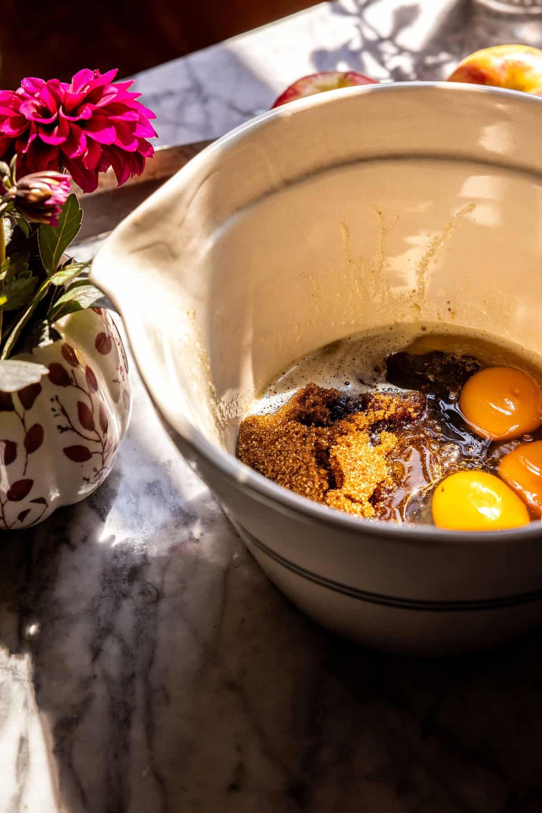
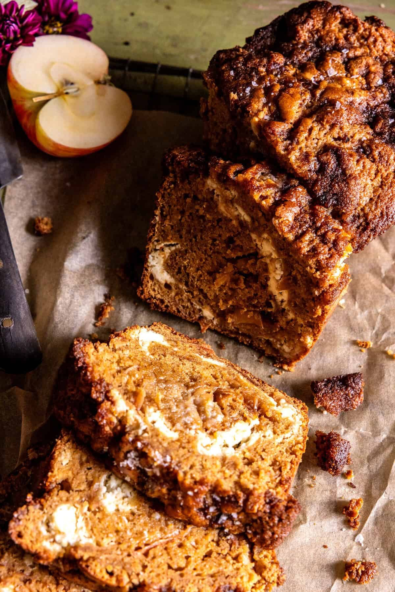

By Tieghan Gerard Half Baked Harvest

Step 1: Mix the chai spice This one’s easy—just mix all the spices together in a small bowl. That’s it! If you have leftovers, save them for sprinkling into your coffee. So yummy! Step 2: Make the batter Start with melted butter. I don’t use a microwave, so I melt mine on the stove until it reaches a lightly browned stage for extra flavor. Whisk the butter with yogurt, apple butter, eggs, and vanilla. Then stir in the dry ingredients: whole wheat pastry flour (or all-purpose), a little of the chai spice, baking powder, and salt. Step 3: Add the apples and cream cheese swirl I like to leave the skin on my apples—it gives more flavor and fiber. Slice and chop the apples, then toss them with brown sugar and chai spice before folding them into the batter. Swirl in the softened cream cheese gently. Don’t overmix—just a light stir gives you those pretty ribbons of cream cheese throughout. Serve Enjoy the bread warm or cooled, though it’s hard to resist cutting into it fresh from the oven. I love it with a pat of European-style butter and a sprinkle of flaky sea salt. Cozy, spiced, and the perfect way to welcome autumn!

Love and Lemons
Jeanine Donofrio's Apple Bread
This recipe lays out a detailed ingredients list that highlights the ingredient and then explains its role in the recipe. Not much scrolling is required, as the summary of the recipe is brief, and the ingredients are listed next, and this follows an image of them, which is extremely helpful for visual people.
Sally's Baking Addiction
Sally McKenny's Apple Cake:
A few things that make this a good recipe website are the many, many images of the cake throughout the instructions, and that there are favorable reviews included at the top of the page.
All Recipes
Pumpkin Gooey Butter Cake
https://www.allrecipes.com/pumpkin-gooey-butter-cake-recipe-12115213All Recipes has a very straightforward website that cuts to the chase in terms of laying out information in a clean, precise way. They do not have the author's story, rather, they begin the website with the recipe name and dive right in to the ingredients. They also lay out information like the prep and cook time, which is helpful.
Other Websites: Non-Recipe
The Apple Store's website is sleek and clean, and has incredible visual balance. Most elements are centered on the page, there are minimal elements or moving parts, and it has clear links and labels.
This magazine's website is easy to navigate because it is broken into several columns and sticks with a geometric, square-layout. These blocks organize the information into a clear visual heirachry.
The My Books page of the Goodreads website is formatted to show the book covers. I appreciate this layout because the cover contains the books content: title, author, and not much esle is needed when I have already read the book. Along the lefthand side of the webpage, there is a column to sort the books into specific categories, and this is very ncie when I want to find a particular genre.